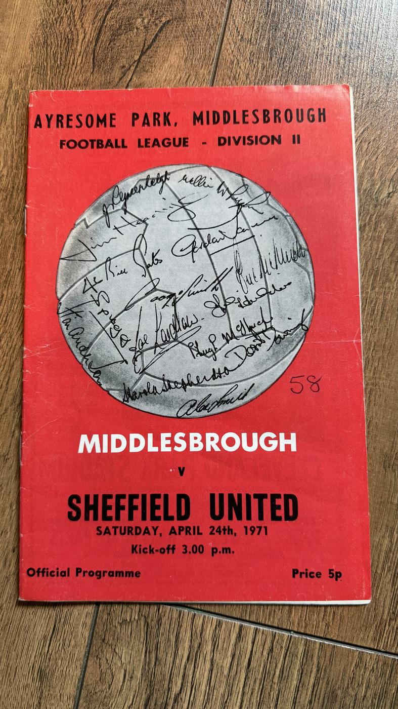

FP-0211
Middlesbrough vs Sheffield United
Signed
Available
Middlesbrough's official programme for the Division Two match against Sheffield United at Ayresome Park, 24 April 1971, with the ball graphic on the front cover filled with handwritten signatures. They appear to be autographs of the 1970-71 Boro squad - names consistent with Jim Platt, Willie Maddren, Stuart Boam and John Hickton can be made out - but the set is unauthenticated, so judge the close-up photographs for yourself.
Buy now - £4Tap to email me and reserve FP-0211 - I'll confirm it's still available and reply with payment details (a simple bank transfer). UK postage is included in the price.